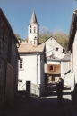
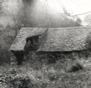
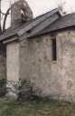

montagnes
le site - culture
nature - sports
Location
saisonnière
la maison
tarifs et réservations

{kind=link}



{kind=link}
L'Ariège regorge de trésors amoureusement conservés !
Aux confins d'un riche patrimoine architectural, la commune couseranaise abrite trois églises : Saint-Pierre, la chapelle Saint-Quintin (toutes deux classées aux monuments historiques) et la chapelle du Calvaire reliée à Saint-Pierre par un chemin de croix datant du XVIIème siècle.
Le château féodal de Durfort appartînt à la dynastie de Coarraze (dont le baron Raymond-Arnaud qui fût l'un des compagnons de Jeanne d'Arc) jusqu'au décès de Catherine de Coarraze (XVème siècle) à la prodigalité de qui Galey doit la construction de son Calvaire.
L'on dit qu'elle aurait offert à Galey une cloche d'argent. En fait, lors de la refonte des cloches (1483), refusant qu'elles soient envoyées à Toulouse, elle finança elle-même la refonte et fît verser quantités d'argent dans les fours.
La mémoire locale ne tarit d'éloges sur sa générosité et raconte enfin que Madame allait jusqu'à céder pour rien, aux Galeyats, la viande d'animaux qu'elle faisait abattre et dont elle ne suçait que la moëlle des os.
Déchiré entre pays Cathare (sous-préfecture de Pamiers) et pays Gascon (sous-préfecture de Saint-Girons), l'Ariège fût aussi le théâtre de sanglants faits historiques.
Visitez :
- les grottes de Bedeilhac, La Vache, Lombrives, Le Mas d'Azil et Niaux ;
- la cité romaine de Saint-Lizier et son palais des Evêques;
- le village de Balagué (qui accueillit le tournage du Retour de Martin Guerre) ;
- le village gaulois ;
- la chapelle romane de Castillon-en-Couserans,
- Notre-Dame de Tremesaygues ("d'entre-deux-eaux") sise à Audressein ;
- les vestiges de Montésgur, château Cathare de la Renaissance...
|  |
{kind=link}
haut de page